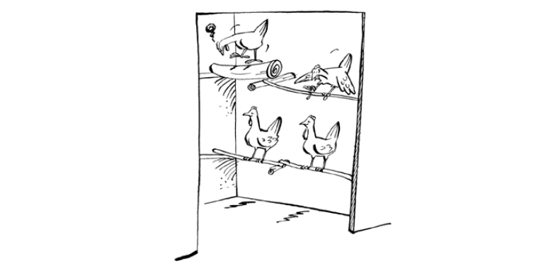
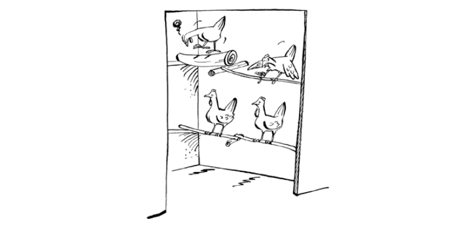

ফিডার এবং ড্রিংকার
- ফিডার এবং ড্রিঙ্কার একই রকম, ফ্রি-রেঞ্জ, উন্নত ফ্রি-রেঞ্জ সিস্টেম বা ছোট-স্কেল সীমাবদ্ধ সিস্টেমে ব্যবহৃত হোক না কেন। এগুলি রৈখিক বা নলাকার হতে পারে।

রৈখিক ফিড ট্রফ। একটি ঘূর্ণায়মান হাতল পাখিদের ফিডারে বাসা বাঁধতে এবং মলত্যাগ করতে বাধা দেয়।
- রোগের বিস্তার রোধ করার জন্য খাবার এবং পানীয়ের পাত্র সবসময় পরিষ্কার রাখা উচিত।
- এগুলি এত বড় হওয়া উচিত যে একসাথে বেশ কয়েকটি মুরগি খাওয়াতে পারবে। এক মিটার লিনিয়ার ট্রফ বা ৩৫ সেমি (ব্যাস) টিউব ফিডার ২০টি প্রাপ্তবয়স্ক পাখি খাওয়ার জন্য যথেষ্ট বড়। ৪০টি মুরগির জন্য একই ব্যাসের ড্রিংকার যথেষ্ট।
- কৃষক গোষ্ঠীর কার্যকলাপ হিসেবে স্থানীয়ভাবে ফিডার তৈরি করা যেতে পারে। একটি ফিডারের কমপক্ষে নিম্নলিখিত পরিমাপ থাকা উচিত:
- রৈখিক ফিডারের একপাশে প্রতি মুরগির জন্য ২ সেমি
- চাষীদের জন্য প্রতি পাখির জন্য ৫ সেমি এবং
- প্রাপ্তবয়স্ক মুরগির জন্য প্রতি পাখির জন্য ১২ সেমি।
- নিম্নলিখিত প্রয়োজনীয়তা পূরণ করে এগুলি তৈরি করা উচিত:
- পরিষ্কার এবং পূরণ করা সহজ।
- এটিতে খাদ্য পড়ে যাওয়া বা অপচয়ের অনুমতি দেওয়া উচিত নয়।
- এটি বিষ্ঠা (মল পদার্থ) দ্বারা খাদ্য দূষণের অনুমতি দেবে না।

স্থানীয় ফিডার এবং ড্রিংকার কীভাবে তৈরি করবেন
- স্থানীয় উপকরণ থেকে সহজেই ফিডার এবং ড্রিংকার তৈরি করা যেতে পারে। উদাহরণস্বরূপ, একটি খালি টিন একটি প্লেটে উল্টে রাখলে তা একটি ভালো ড্রিংকার তৈরি করে। টিনটি উল্টে রাখলে, আপনি ময়লা থেকে পানি দূষিত হওয়া এড়াতে পারবেন (চিত্র 17, 18 এবং 19)।
- পানকারী তৈরি:
- আপনি রিমের কর্ণের কাছে একে অপরের সাথে দুটি ছোট গর্ত করে শুরু করুন।
- ক্যানে পরিষ্কার জল ঢালুন।
- উপরে একটি ছোট রিম সহ একটি সমতল প্লেট রাখুন এবং টিন এবং প্লেট উল্টে দিন, একই সাথে একে অপরের বিরুদ্ধে চাপ দিন।
- ড্রিংকারটি আলতো করে মাটিতে রাখুন। প্লেটের প্রান্তটি ছোট পাখিদের জন্য যথেষ্ট নিচু হওয়া উচিত, তবে প্রাপ্তবয়স্ক পাখিদের জন্যও যথেষ্ট উঁচু হওয়া উচিত যাতে তারা গরম আবহাওয়ায় তাদের ওয়াটলগুলিকে ঠান্ডা রাখতে পারে।
- জেরিক্যান থেকে স্থানীয়ভাবে পানীয় তৈরির জন্য দুটি স্ট্রিপ কেটে একটি চওড়া দিকে ফাঁক তৈরি করে ঢাকনা বন্ধ করে দেওয়া যেতে পারে। খোলা অংশটি যেন পাখির মাথা জল পান করার জন্য চলে যেতে পারে। জেরিক্যানটি বিপরীত দিকে রাখুন যা কাটা হয় না এবং জল দিয়ে পূর্ণ করুন।
- ছানাদের পানি পানের জন্য ড্রিংকারগুলি খুব গভীর হওয়া উচিত নয় এবং ছানাগুলিতে পানি পড়তে দেওয়া উচিত নয়। ছানাদের ডুবে যাওয়া এড়াতে তাদের জন্য ড্রিংকারগুলি অগভীর হওয়া উচিত।
- বাণিজ্যিক ফিডার এবং ড্রিংকারগুলি বাজারেও কেনা যেতে পারে, হয় ধাতু বা প্লাস্টিকের ধরণের (চিত্র ১৭)। এগুলি প্রায়শই ব্যয়বহুল এবং সাধারণত স্থানীয়ভাবে উৎপাদিত ফিডার বা ড্রিংকারগুলির চেয়ে ভাল হয় না।

- কাঠ, লোহার শিট বা মাটি দিয়ে লিনিয়ার ফিডার তৈরি করা সহজ। ধাতব ফিডার পরিষ্কার এবং জীবাণুমুক্ত করা সহজ। কাঠের ফিড ট্রফ সস্তা কিন্তু জীবাণুমুক্ত করা কঠিন।
- ফিডারগুলি এমনভাবে তৈরি করা গুরুত্বপূর্ণ যাতে খাবারের অপচয় এড়ানো যায়। এছাড়াও, যদি ফিডারগুলি উপরের দিকে না ভরা হয় তবে খাবারের অপচয় কমানো যেতে পারে। ফিডারগুলি অর্ধেক ভরাট করা এবং তারপরে নিয়মিতভাবে পুনরায় পূরণের জন্য পরীক্ষা করা ভাল।
- লিনিয়ার ফিডারগুলির উপরে একটি ঘূর্ণায়মান বার থাকা উচিত যাতে পাখিরা খাবারের উপর বসে থাকতে এবং মলত্যাগ করতে না পারে। বারটি খাবারের পৃষ্ঠের সাথে স্থানও সীমাবদ্ধ করে এবং পাখিদের ফিডারগুলিতে প্রবেশ করতে এবং আঁচড়ের মাধ্যমে অপচয় করতে বাধা দেয়। লিনিয়ার ফিডারগুলি কীভাবে তৈরি করবেন এবং তাদের ব্যবহার সম্পর্কে আরও উদাহরণ নীচের ছবিতে দেখানো হয়েছে।

পার্চ
- রাতে মুরগির বিশ্রামের জন্য পার্চ গুরুত্বপূর্ণ। পার্চ মুরগিকে নিরাপদ রাখে, ঠিক যেমন তারা বনের গাছে ঘুমায়।
- পার্চেস মুরগির পা পরিষ্কার রাখতেও সাহায্য করবে, কারণ তাদের বিষ্ঠা তাদের পা দূষিত করবে না। এছাড়াও, ডিমগুলি আরও পরিষ্কার হবে কারণ মুরগি যখন বাসায় প্রবেশ করবে তখন তাদের পা আরও পরিষ্কার থাকবে।
- মেঝেতে বিশ্রামরত মুরগির উপর পরজীবী আক্রমণ করতে পারে এবং পার্চগুলি প্রায়শই রাতে পালকের মধ্যে বহিরাগত পরজীবী প্রবেশের ঝুঁকি কমায়।
- বহিরাগত পরজীবীর আক্রমণ প্রতিরোধ করার জন্য, পার্চগুলি যেখানে প্রাচীরের সাথে মিলিত হয়, সেখানে তেল বা কেরোসিন দিয়ে শোধন করা যেতে পারে।
- প্রতিটি এক মিটার লম্বা পার্চে পাঁচটি প্রাপ্তবয়স্ক পাখি থাকতে পারে।
- পাখির পায়ের আকার এবং গঠনের জন্য বাঁশ বা গোলাকার লাঠি দিয়ে পার্চ তৈরি করা সবচেয়ে ভালো। এগুলো খুব পাতলা বা খুব পুরু হওয়া উচিত নয়। লাঠিগুলি খুব বড় বা খুব ছোট হলে, পাখি পড়ে যেতে পারে।
 

বাসা
অনেক গ্রামে মুরগির জন্য বাসা তৈরি করা হয় না এবং অবশেষে মুরগিগুলি মাটিতে বা ঝোপঝাড়ে ডিম পাড়ে, যেখানে তাদের খুঁজে পাওয়া কঠিন হতে পারে। কিছু পোল্ট্রি খামারি মুরগির ঘরের বাইরে মাটিতে বাসা তৈরি করে। এটি এড়ানো উচিত, কারণ ঘরের বাইরে ডিম শিকারী এবং চোরের সংস্পর্শে বেশি আসে। চিত্র 25 রান্নাঘরের বাইরে ডিম সহ একটি বাসা দেখায়।
আমুরু জেলার বাড়ির বাইরে ভ্যারেন্ডায় ঝুলন্ত বাসা। মুরগি ডিম ফোটাচ্ছে কিন্তু কিছু ডিম ভাঙা বাসার (তীর) মাধ্যমে ঠান্ডা বাতাসের সংস্পর্শে আসছে। এর ফলে কিছু ডিম ফুটবে না।
- মুরগির ঘরের ভেতরে এবং মাটির উপরে বাসা স্থাপন করা উচিত।
- প্রজননের জন্য বাসাগুলি পৃথক পৃথক হতে হবে, যাতে একবারে কেবল একটি পাখিই প্রজনন করতে পারে। বাসাটি একটি শান্ত এবং অন্ধকার জায়গায়, মেঝেতে অথবা মাটির উপরে উঁচু করে স্থাপন করা উচিত যাতে স্যাঁতসেঁতে না হয় এবং এগুলি সহজেই অপসারণযোগ্য হতে পারে। মুরগিটি প্রজননের সময় একবার প্রজননের সময় হলে, তাকে অন্য জায়গায়, যেমন, অন্য ঘরে সরিয়ে নেওয়া প্রয়োজন, যাতে অন্য মুরগিগুলি তাকে বিরক্ত না করে, এমনকি প্রজননের সময়ও না যায়।
ব্রুডি মুরগির বাসা একটি শান্ত স্থানে স্থাপন করা উচিত।
- সাধারণ বাসা হতে পারে মাটির পাত্র, ক্যালাব্যাশ বা স্থানীয় তন্তু, পিচবোর্ড, বা কাঠের বাক্স, কাটা জেরিক্যান, বেসিন বা অগভীর খনন দিয়ে তৈরি ঝুড়ি।
- মুরগি যাতে আরামদায়ক বোধ করে, তার জন্য বাসাগুলো সঠিক আকারের হওয়া উচিত। সাধারণত একটি বাসা ৩০ x ৩০ x ৩০ সেমি মাপের হয়। খুব বেশি বড় করবেন না, কারণ মুরগি আরামদায়ক বোধ করবে না। একটি ক্যালাব্যাশ বা বাসার ঝুড়ি ৪০ x ২০ x ২৫ সেমি (উপরের ব্যাস x উচ্চতা x নিম্ন ব্যাস) মাপতে পারে। একটি মাটির পাত্র, কমবেশি একই রকম।
ব্রুডি মুরগির জন্য সহজ বাসাগুলি সহজে পরিবহনযোগ্য হওয়া উচিত
ব্রুডি মুরগির জন্য একটি সহজ এবং আকর্ষণীয় বাসা তৈরি করা যেতে পারে এই তিনটি ধাপ অনুসরণ করে:
- নিশ্চিত করুন যে পাত্র বা ঝুড়িটি পরিষ্কার এবং শুকনো;
- ১/৩ অংশ গভীরতা পর্যন্ত ছাই মিশ্রিত বালি ভরাট করুন;
- পরিষ্কার, নরম বাসা বাঁধার উপকরণ (খড় বা খড়) উপরে ২/৩ অংশ গভীরতা পর্যন্ত রাখুন।
বাসার নীচের বালিতে ৫-৮ সেমি গভীর পর্যাপ্ত নরম লিটার ঢেকে দিতে হবে। লিটারটি পুরানো কাপড়, তুলা, শুকনো ঘাস, কফির খোসা এবং অন্য যেকোনো নরম স্যাঁতসেঁতে উপাদান হতে পারে।
- বাসা তৈরির উপাদানের সাথে ছাই, তামাক পাতা বা অন্যান্য পরজীবী-বিরোধী পদার্থ মিশিয়ে দিলে বেশিরভাগ বাহ্যিক পরজীবী ডিম ফুটতে পারবে না। বাসায় থাকা বাহ্যিক পরজীবী ডিম ফুটতে পারে না, কারণ তারা মুরগিকে বিরক্ত করে এবং মুরগি বাসা থেকে বেরিয়ে যায় এবং প্রায়শই আঁচড় দেয়, ফলে ডিম ঠান্ডা থাকে।
- একাধিক মুরগির জন্য, আপনার কাছে এমন অনেক বাসা থাকতে পারে যেখানে একসাথে আরও মুরগির বাসা বাঁধতে পারে। চিত্র ২৯-এর মতো কাঠের তৈরি বাসা বাক্স তৈরি করা যেতে পারে। এগুলি ৩০ সেমি লম্বা, ৩০ সেমি চওড়া এবং ২৫ সেমি উঁচু। এই বাসার উপর একটি গর্ত বা খাঁচা একটি পাখির জন্য উপযুক্ত।

পৃথক বাসার ব্যাটারি। বাম দিকের বাসার প্রবেশপথটি প্রশস্ত এবং ডান দিকের বাসার প্রবেশপথটি ছোট।